19. 组成分析#
关键要点
如果主要关注的是已知细胞类型或状态之间的组成变化，可使用 scCODA 或 tascCODA 来对丰度变化做统计评估。
如果数据并不呈现明显的聚类（例如在发育过程中），并且我们关心的是可能出现在细胞类型之间过渡状态、或某种细胞类型特定子集中的细胞丰度差异，那么应当使用基于 KNN 的方法，如 DA-Seq 或 MILO。
环境设置
安装 conda:
在创建环境之前，请确保 conda 已安装在您的系统中。
保存 yml 内容:
将 yml 选项卡中的内容复制到名为
environment.yml的文件中。
创建环境:
打开终端或命令提示符。
运行以下命令：
conda env create -f environment.yml
激活环境:
创建好环境后，使用以下命令激活它：
conda activate <environment_name>
替换
<environment_name>，名称就是在environment.yml文件中指定的那个。在 yml 文件里，它看起来像这样：name: <environment_name>
验证安装:
通过运行以下命令，检查环境是否创建成功：
conda env list
name: compositional
channels:
- conda-forge
- bioconda
- anaconda
dependencies:
- conda-forge::python=3.12.12
- r-base=4.5.2
- conda-forge::schist=0.9.2
- pip
- pip:
- pertpy==1.0.4
19.1. 动机#
除了基因表达模式的变化之外，细胞组成（例如各细胞类型的比例）也可能在不同条件之间发生变化。例如，某种药物可能诱导一种细胞类型发生转分化，这会反映在细胞身份的组成上。要准确确定细胞身份聚类的比例和背景变异，需要足够的细胞数和样本数。组成分析可以在细胞身份聚类的层面进行，这些聚类表现为已知的细胞类型，或表现为细胞状态（例如最近受到扰动影响的细胞）。
{kind=link}
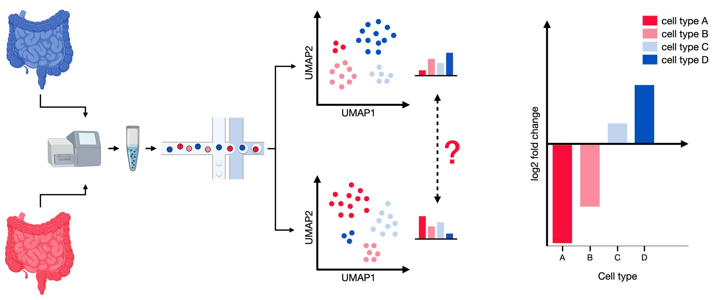
图19.1 差异丰度分析比较两种条件之间细胞类型的组成。来自两种模态的样本包含不同比例的细胞类型，可以检验丰度是否发生了显著的偏移。#
本章将介绍这两种方法，并把它们应用到 Haber 数据集[Haber et al., 2017]。该数据集包含 53,193 个来自小鼠小肠及类器官（organoid）的单个上皮细胞。其中一些细胞还受到了细菌或蠕虫感染，分别通过沙门氏菌（Salmonella）和多形螺旋线虫（Heligmosomoides polygyrus）。在本教程中，我们使用的是完整 Haber 数据集的一个子集，只包含专为此目的采集的对照细胞和受感染细胞。值得注意的是，我们排除了另一个只采集大细胞的附加数据集，以加快计算、降低复杂度。
作为第一步，我们加载数据集。
19.2. 数据加载#
import warnings
import pandas as pd
warnings.filterwarnings("ignore")
warnings.simplefilter("ignore")
import matplotlib
import matplotlib.pyplot as plt
import numpy as np
import pertpy as pt
import scanpy as sc
import seaborn as sns
adata = pt.dt.haber_2017_regions()
adata
adata.obs
| batch | barcode | condition | cell_label | |
|---|---|---|---|---|
| index | ||||
| B1_AAACATACCACAAC_Control_Enterocyte.Progenitor | B1 | AAACATACCACAAC | Control | Enterocyte.Progenitor |
| B1_AAACGCACGAGGAC_Control_Stem | B1 | AAACGCACGAGGAC | Control | Stem |
| B1_AAACGCACTAGCCA_Control_Stem | B1 | AAACGCACTAGCCA | Control | Stem |
| B1_AAACGCACTGTCCC_Control_Stem | B1 | AAACGCACTGTCCC | Control | Stem |
| B1_AAACTTGACCACCT_Control_Enterocyte.Progenitor | B1 | AAACTTGACCACCT | Control | Enterocyte.Progenitor |
| ... | ... | ... | ... | ... |
| B10_TTTCACGACAAGCT_Salmonella_TA | B10 | TTTCACGACAAGCT | Salmonella | TA |
| B10_TTTCAGTGAGGCGA_Salmonella_Enterocyte | B10 | TTTCAGTGAGGCGA | Salmonella | Enterocyte |
| B10_TTTCAGTGCGACAT_Salmonella_Stem | B10 | TTTCAGTGCGACAT | Salmonella | Stem |
| B10_TTTCAGTGTGACCA_Salmonella_Endocrine | B10 | TTTCAGTGTGACCA | Salmonella | Endocrine |
| B10_TTTCAGTGTTCTCA_Salmonella_Enterocyte.Progenitor | B10 | TTTCAGTGTTCTCA | Salmonella | Enterocyte.Progenitor |
9842 rows × 4 columns
数据分 10 个批次采集。各个不同的条件为 Control、Salmonella、Hpoly.Day3 和 Hpoly.Day10，分别对应健康对照状态、沙门氏菌感染、感染多形螺旋线虫 3 天后的细胞，以及感染 10 天后的细胞。cell_label 对应于细胞类型。
19.3. 为什么细胞类型计数数据是成分数据#
在分析细胞计数数据的组成变化时，需要考虑多种技术和方法学上的局限。一个挑战是实验重复数通常很少，这会使得用频率派统计检验做差异丰度分析时置信区间很宽。更重要的是，单细胞测序本身就限制了每个样本能测到的细胞数——我们无法对组织或器官中的每一个细胞都测序，而只能使用一个有代表性的小快照。然而，这迫使我们把细胞类型计数视为纯粹的比例，即一个样本中的细胞总数只是一个缩放因子。在统计学文献中，这类数据被称为成分数据（compositional data）[Aitchison, 1982]，其特点是：一个样本中所有特征（在我们这里就是各细胞类型）的相对丰度之和总是等于 1。
由于这种“和为一”的约束，细胞类型丰度之间会被诱导出负相关。为说明这一点，我们来看下面的例子：
在一个病例-对照研究中，我们想比较一个健康器官和一个患病器官的细胞类型组成。两种情况下都有三种细胞类型（A、B、C），但它们的丰度不同：
健康器官由每种类型各 2,000 个细胞组成（共 6,000 个细胞）。
疾病导致 A 型细胞翻倍，而 B、C 型细胞不受影响，因此患病器官有 8,000 个细胞。
healthy_tissue = [2000, 2000, 2000]
diseased_tissue = [4000, 2000, 2000]
example_data_global = pd.DataFrame(
data=np.array([healthy_tissue, diseased_tissue]),
index=[1, 2],
columns=["A", "B", "C"],
)
example_data_global["Disease status"] = ["Healthy", "Diseased"]
example_data_global
| A | B | C | Disease status | |
|---|---|---|---|---|
| 1 | 2000 | 2000 | 2000 | Healthy |
| 2 | 4000 | 2000 | 2000 | Diseased |
plot_data_global = example_data_global.melt(
"Disease status", ["A", "B", "C"], "Cell type", "count"
)
fig, ax = plt.subplots(1, 2, figsize=(12, 6))
sns.barplot(
data=plot_data_global, x="Disease status", y="count", hue="Cell type", ax=ax[0]
)
ax[0].set_title("Global abundances, by status")
sns.barplot(
data=plot_data_global, x="Cell type", y="count", hue="Disease status", ax=ax[1]
)
ax[1].set_title("Global abundances, by cell type")
plt.show()
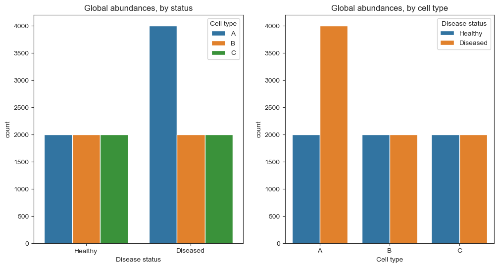
我们想弄清楚在患病器官中哪些细胞类型的丰度增加或减少。如果我们能确定两个器官中每个细胞的类型，情况就会很清楚，正如上方右图所示。可惜，这是做不到的。由于测序通量有限，我们只能从两个群体中各抽取 600 个细胞的代表性样本。为了模拟这一步，我们可以使用 numpy 的 random.multinomial 函数，从这两个群体中无放回地抽取 600 个细胞：
rng = np.random.Generator(1234)
healthy_sample = rng.multinomial(pvals=healthy_tissue / np.sum(healthy_tissue), n=600)
diseased_sample = rng.multinomial(
pvals=diseased_tissue / np.sum(diseased_tissue), n=600
)
example_data_sample = pd.DataFrame(
data=np.array([healthy_sample, diseased_sample]),
index=[1, 2],
columns=["A", "B", "C"],
)
example_data_sample["Disease status"] = ["Healthy", "Diseased"]
example_data_sample
| A | B | C | Disease status | |
|---|---|---|---|---|
| 1 | 193 | 201 | 206 | Healthy |
| 2 | 296 | 146 | 158 | Diseased |
plot_data_sample = example_data_sample.melt(
"Disease status", ["A", "B", "C"], "Cell type", "count"
)
fig, ax = plt.subplots(1, 2, figsize=(12, 6))
sns.barplot(
data=plot_data_sample, x="Disease status", y="count", hue="Cell type", ax=ax[0]
)
ax[0].set_title("Sampled abundances, by status")
sns.barplot(
data=plot_data_sample, x="Cell type", y="count", hue="Disease status", ax=ax[1]
)
ax[1].set_title("Sampled abundances, by cell type")
plt.show()
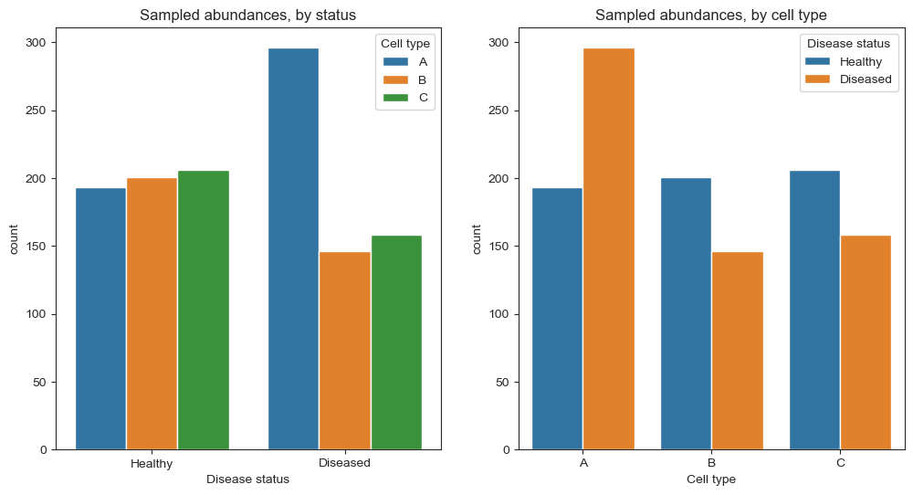
现在情况就不再清楚了。虽然 A 型细胞的计数仍在增加（大约从 200 增到 300），但另外两种细胞类型似乎从约 200 减少到了 150。这种表面上的减少，是由我们“限定为 600 个细胞”的约束造成的——如果样本中更大比例被 A 型细胞占据，那么 B、C 型细胞所占的份额就必然更低。因此，在不考虑其他细胞类型的情况下，要确定某一种细胞类型丰度的变化是不可能的。
如果我们忽略数据的成分性，使用诸如 Wilcoxon 秩和检验、或 scDC（一种通过自助法（bootstrap）重采样来做差异细胞类型组成分析的方法）等单变量方法[Cao et al., 2019]，我们可能会错误地把细胞类型群体的偏移当作统计上可靠的效应，尽管这些偏移其实是由细胞类型比例固有的负相关引起的。
此外，经过抽样的数据并不只给我们的问题提供一个有效解。如果在患病情况下 B、C 两种细胞类型都减少了 1,000 个细胞，我们会得到与上面相同的 600 个细胞的代表性样本。为了得到唯一的结果，我们可以为数据固定一个参考点，并假设它在所有样本中保持不变[Brill et al., 2019]。这个参考点可以是单一的某种细胞类型、对多种细胞类型的某种聚合（例如几何平均），也可以是一组正交基 [Egozcue et al., 2003].
虽然规模和重复数都足够的单细胞数据集只是近几年才出现，但同样的统计特性在微生物分析的背景下也早有讨论[Gloor et al., 2017]。在那里，一些常用的方法包括 ANCOM-BC [Lin and Peddada, 2020] 和 ALDEx2 [Fernandes et al., 2014]。然而，由于实验重复数很少，这些方法在单细胞数据集上往往力不从心。
scCODA 已经解决了这一问题[Büttner et al., 2021]，我们将在下一节介绍它并应用到我们的数据集上。
19.4. 有标签的聚类#
scCODA 属于那一类需要预先定义聚类（最常见的是细胞类型）、再从统计上推导组成变化的工具。受微生物组数据组成分析方法的启发，scCODA 提出了一种贝叶斯方法，以解决单细胞分析中常见的低重复数问题[Büttner et al., 2021]。它用一个层次化的狄利克雷-多项（Dirichlet-Multinomial）模型来对细胞类型计数建模，通过对所有被测细胞类型比例的联合建模，既考虑了细胞类型比例的不确定性，也考虑了负相关偏倚。为确保解唯一可辨识、且易于解释，scCODA 选取某一种特定细胞类型作为参考。因此，scCODA 检测到的任何组成变化，都必须相对于所选的参考来看待。
然而，scCODA 假设协变量与细胞丰度之间呈对数线性关系，在使用连续协变量时，这一假设未必总能反映其背后的生物学过程。scCODA 的另一个局限在于，除了成分效应之外，它无法推断各细胞组成之间的相关结构。此外，scCODA 只对平均丰度的变化建模，而不检测响应变异性的变化[Büttner et al., 2021].
作为第一步，我们实例化一个 scCODA 模型。
然后，我们使用 load 函数来准备一个 MuData 对象以供后续处理，它会从输入的 adata 中创建一个组成分析数据集。我们把 cell_type_identifier 指定为 cell_label，sample_identifier 指定为 batch，并把 covariate_obs 指定为 condition （在我们的例子中）。
sccoda_model = pt.tl.Sccoda()
sccoda_data = sccoda_model.load(
adata,
type="cell_level",
generate_sample_level=True,
cell_type_identifier="cell_label",
sample_identifier="batch",
covariate_obs=["condition"],
)
sccoda_data
MuData object with n_obs × n_vars = 9852 × 15223
2 modalities
rna: 9842 x 15215
obs: 'batch', 'barcode', 'condition', 'cell_label', 'scCODA_sample_id'
coda: 10 x 8
obs: 'condition', 'batch'
var: 'n_cells'要总览各条件下细胞类型的分布，我们可以使用 scCODA 的 boxplots。为了更好地理解数据的分布情况，红点显示的是实际数据点。
sccoda_model.plot_boxplots(
sccoda_data,
modality_key="coda",
feature_name="condition",
figsize=(12, 5),
add_dots=True,
args_swarmplot={"palette": ["red"]},
)
plt.show()
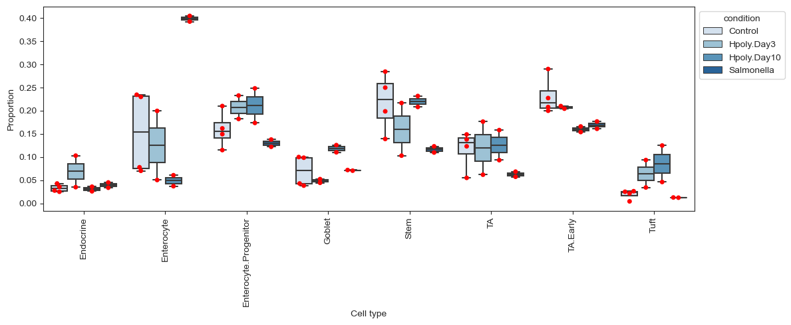
这些箱线图凸显出细胞类型分布上的一些差异。显而易见的是，在 Salmonella 条件下肠上皮细胞（enterocyte）的比例很高。但其他细胞类型，例如过渡放大（transit-amplifying，TA）细胞，在 Salmonella 条件下相比对照也表现出丰度上的明显差异。这些差异中是否有任何具有统计显著性，还需要恰当地评估。
另一种可视化是 scCODA 提供的堆叠条形图。这种可视化很好地展现了成分数据的特点：如果比较 Control 组和 Salmonella 组，可以看到肠上皮细胞（Enterocyte）的比例在受感染小鼠中大幅增加。由于数据是比例性的，这会导致所有其他细胞类型的份额下降，以满足“和为一”的约束。
sccoda_model.plot_stacked_barplot(
sccoda_data, modality_key="coda", feature_name="condition", figsize=(4, 2)
)
plt.show()
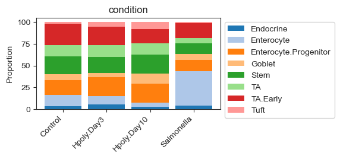
除了细胞计数 AnnData 对象之外，scCODA 还需要两个主要参数：一个公式（formula）和一个参考细胞类型。公式描述协变量，使用 R 风格来指定。在我们的例子中，我们把条件指定为唯一的协变量。由于它是一个有四个水平（对照和三种疾病状态）的离散协变量，这相当于建模“每个状态与其余样本”的比较。如果想同时建模多个协变量，只需在公式中把它们加上（即 formula = "covariate_1 + covariate_2"）即可。如上所述，scCODA 需要一个参考细胞类型来作比较，并假设它不受协变量影响。scCODA 既可以自动选择一个合适的参考细胞类型（即在所有样本中相对丰度几乎恒定的那种细胞类型），也可以用用户指定的参考细胞类型来运行。这里我们把内分泌细胞设为参考，因为从视觉上看它们的丰度似乎相当稳定。手动设定参考细胞类型之外的另一种做法是将 reference_cell_type 设为 "automatic"，这会强制 scCODA 自行选择一个合适的参考细胞类型。如果参考细胞类型的选择不明确，我们建议使用这个选项，以获得一个提示、甚至一个最终的选择。
sccoda_data = sccoda_model.prepare(
sccoda_data,
modality_key="coda",
formula="condition",
reference_cell_type="Endocrine",
)
sccoda_model.run_nuts(sccoda_data, modality_key="coda", rng_key=1234)
sample: 100%|██████████| 11000/11000 [01:08<00:00, 161.54it/s, 255 steps of size 1.72e-02. acc. prob=0.85]
sccoda_data["coda"].varm["effect_df_condition[T.Salmonella]"]
| Final Parameter | HDI 3% | HDI 97% | SD | Inclusion probability | Expected Sample | log2-fold change | |
|---|---|---|---|---|---|---|---|
| Cell Type | |||||||
| Endocrine | 0.0000 | 0.000 | 0.000 | 0.000 | 0.0000 | 32.598994 | -0.526812 |
| Enterocyte | 1.5458 | 0.985 | 2.071 | 0.283 | 0.9996 | 382.634978 | 1.703306 |
| Enterocyte.Progenitor | 0.0000 | -0.475 | 0.566 | 0.143 | 0.2817 | 126.126003 | -0.526812 |
| Goblet | 0.0000 | -0.345 | 1.013 | 0.290 | 0.4354 | 52.735108 | -0.526812 |
| Stem | 0.0000 | -0.742 | 0.297 | 0.173 | 0.3092 | 135.406509 | -0.526812 |
| TA | 0.0000 | -0.876 | 0.331 | 0.211 | 0.3358 | 78.986854 | -0.526812 |
| TA.Early | 0.0000 | -0.338 | 0.615 | 0.151 | 0.3033 | 152.670412 | -0.526812 |
| Tuft | 0.0000 | -1.221 | 0.548 | 0.342 | 0.4098 | 23.041143 | -0.526812 |
接受率（acceptance rate）描述的是在初始预热（burn-in）阶段之后被接受的候选样本所占的比例，可以作为“优化运行不佳”的一个临时性指标。就 scCODA 而言，理想的接受率在 0.4 到 0.9 之间。接受率过高或过低都表明采样过程存在问题。
sccoda_data
MuData object with n_obs × n_vars = 9852 × 15223
2 modalities
rna: 9842 x 15215
obs: 'batch', 'barcode', 'condition', 'cell_label', 'scCODA_sample_id'
coda: 10 x 8
obs: 'condition', 'batch'
var: 'n_cells'
uns: 'scCODA_params'
obsm: 'covariate_matrix', 'sample_counts'
varm: 'intercept_df', 'effect_df_condition[T.Hpoly.Day3]', 'effect_df_condition[T.Hpoly.Day10]', 'effect_df_condition[T.Salmonella]'scCODA 根据各效应的纳入概率（inclusion probability）来选择可信效应。可信与不可信效应之间的分界，取决于所期望的假发现率（FDR）。较小的 FDR 值会给出更保守的结果，但可能漏掉一些效应；较大的 FDR 值则以更多假发现为代价选出更多效应。期望的 FDR 水平可以在推断之后通过 sim_results.set_fdr() 轻松设定，默认值为 0.05。由于 FDR 视数据集不同可能对结果有很大影响，我们建议尝试不同的 FDR（最高到 0.2），以找出最显著的效应。
在我们的例子中，我们使用较为宽松的 0.2 的 FDR。
sccoda_model.set_fdr(sccoda_data, 0.2)
为了得到每种细胞类型组成变化的二元分类（是/否），我们使用 credible_effects 函数（作用于结果对象）。每一个被标为“True”的细胞类型，都显著地更多或更少地存在。倍数变化（fold-change）则说明该细胞类型是变多还是变少。因此，下面我们会把它们和二元分类一起绘制出来。
sccoda_model.credible_effects(sccoda_data, modality_key="coda")
Covariate Cell Type
condition[T.Hpoly.Day3] Endocrine False
Enterocyte False
Enterocyte.Progenitor False
Goblet False
Stem False
TA False
TA.Early False
Tuft False
condition[T.Hpoly.Day10] Endocrine False
Enterocyte True
Enterocyte.Progenitor False
Goblet False
Stem False
TA False
TA.Early False
Tuft True
condition[T.Salmonella] Endocrine False
Enterocyte True
Enterocyte.Progenitor False
Goblet False
Stem False
TA False
TA.Early False
Tuft False
Name: Final Parameter, dtype: bool
要把倍数变化和二元分类一起绘制，我们可以方便地使用 effects_bar_plot 函数。
sccoda_model.plot_effects_barplot(sccoda_data, "coda", "condition")
plt.show()
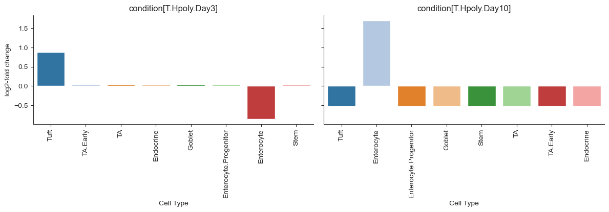
这些图很好地展示了各条件对细胞类型的显著且可信的效应。这些效应在很大程度上与 Haber 论文中的发现一致——他们用了一个非成分性的泊松回归模型，其发现是：
“在 Salmonella 感染后，成熟肠上皮细胞的频率大幅增加。”[Haber et al., 2017]
“多形螺旋线虫（Heligmosomoides polygyrus）导致杯状细胞和簇状细胞的丰度增加。”[Haber et al., 2017]
熟悉原始论文的读者可能会疑惑：为什么 Haber 等人使用的模型比 scCODA 发现了更多的显著效应，例如在 Salmonella 感染时干细胞和过渡放大（Transit-Amplifying）细胞的减少[Haber et al., 2017]。要解释这一差异，请记住：细胞计数数据是成分性的，因此某一种细胞类型相对丰度的增加，必然导致所有其他细胞类型相对丰度的下降。由于 Salmonella 感染小鼠的小肠上皮中肠上皮细胞急剧增加，其他所有细胞类型看起来都在下降，尽管这种变化其实只是数据成分性质造成的。原始的（单变量）泊松回归模型会把这些很可能是假阳性的效应也算进来，而 scCODA 能够考虑数据的成分性，因此不会落入这个陷阱。
19.5. 使用带标签的聚类和层次结构#
除了每种细胞类型的丰度之外，一个典型的单细胞数据集通常还以基于树的层次排序的形式，包含不同细胞之间相似性的信息。这些层次结构既可以通过对基因表达做聚类自动得到（通常这样做是为了发现属于同一细胞类型的细胞聚类），也可以通过有生物学依据的层次结构（如细胞谱系）得到。tascCODA 是 scCODA 的一个扩展，它把层次信息和实验协变量数据整合进对成分计数数据的生成式建模中[Ostner et al., 2021]。这对于分辨率不断提高的细胞图谱构建工作尤其有益。
其核心使用的狄利克雷-多项设置与 scCODA 几乎相同，但对模型做了扩展，使其能够刻画对“细胞类型集合”的效应——这些集合被定义为树结构中的内部节点。
import schist
warnings.filterwarnings("ignore")
warnings.simplefilter("ignore")
objc[13344]: Class GNotificationCenterDelegate is implemented in both /opt/anaconda3/lib/libgio-2.0.0.dylib (0x18ef5ec30) and /usr/local/Cellar/glib/2.74.4/lib/libgio-2.0.0.dylib (0x19be736b0). One of the two will be used. Which one is undefined.
要使用 tascCODA，我们首先必须定义细胞类型的层次排序。一种可能的层次聚类是：使用这八种细胞类型，并按它们在 PCA 表示中的相似性（皮尔逊相关）来排序 sc.tl.dendrogram。由于这个结构在我们的数据中非常简单，因而不会带来太多新的洞见，我们希望有一个更复杂的聚类。最近一种得到这类聚类的方法是 schist 软件包 [Morelli et al., 2021]，它使用一个嵌套随机块模型（nested stochastic block model），在不同分辨率层级上对细胞群体进行聚类。用标准设置运行该方法需要一些时间（在我们的数据上约 15 分钟），并会把每个细胞分配到一个层次聚类，结果存放在 adata.obs。首先，我们需要通过一个 PCA 嵌入来定义细胞之间的距离度量：
# use logcounts to calculate PCA and neighbors
adata.layers["counts"] = adata.X.copy()
adata.layers["logcounts"] = sc.pp.log1p(adata.layers["counts"]).copy()
adata.X = adata.layers["logcounts"].copy()
sc.pp.neighbors(adata, n_neighbors=10, n_pcs=30, random_state=1234)
sc.tl.umap(adata)
WARNING: You’re trying to run this on 15215 dimensions of `.X`, if you really want this, set `use_rep='X'`.
Falling back to preprocessing with `sc.pp.pca` and default params.
然后，我们可以在 AnnData 对象上运行 schist，从而得到一个聚类，它由一组名为“nsbm_level_{i}”的列来定义，存放在 adata.obs:
schist.inference.nested_model(adata, samples=100, random_seed=5678)
adata.obs
一张 UMAP 图很好地展示了 schist 的聚类（这里是第 1 层和第 2 层）如何与细胞类型的分配相对应。其中，层次结构第 1 层的表示是其上一层的严格细化，即第 2 层的每个聚类都被拆分成多个更小的聚类：
sc.pl.umap(
adata, color=["nsbm_level_1", "nsbm_level_2", "cell_label"], ncols=3, wspace=0.5
)
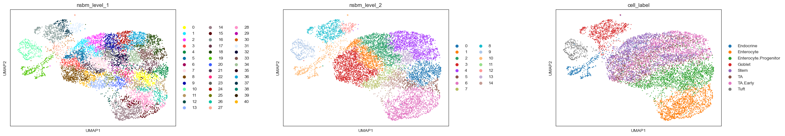
现在，我们把细胞层面的数据转换成样本层面的数据并创建树。我们以与 scCODA 相同的方式创建一个 tasccoda_model 对象，但聚类由 schist 和树的层级来定义。
tascCODA 的 load 函数会准备一个 MuData 对象，并把我们的树表示转换成一个 ete 树结构并保存为 tasccoda_data['coda'].uns["tree"]。为了得到一些不至于太小的聚类，我们在最后一层之前就把树剪断，方法是略去 "nsbm_level_0".
tasccoda_model = pt.tl.Tasccoda()
tasccoda_data = tasccoda_model.load(
adata,
type="cell_level",
cell_type_identifier="nsbm_level_1",
sample_identifier="batch",
covariate_obs=["condition"],
levels_orig=["nsbm_level_4", "nsbm_level_3", "nsbm_level_2", "nsbm_level_1"],
add_level_name=True,
)
tasccoda_data
MuData object with n_obs × n_vars = 9852 × 15256
2 modalities
rna: 9842 x 15215
obs: 'batch', 'barcode', 'condition', 'cell_label', 'scCODA_sample_id', 'nsbm_level_0', 'nsbm_level_1', 'nsbm_level_2', 'nsbm_level_3', 'nsbm_level_4', 'nsbm_level_5'
uns: 'neighbors', 'umap', 'schist', 'nsbm_level_1_colors', 'nsbm_level_2_colors', 'cell_label_colors'
obsm: 'X_pca', 'X_umap', 'CM_nsbm_level_0', 'CM_nsbm_level_1', 'CM_nsbm_level_2', 'CM_nsbm_level_3', 'CM_nsbm_level_4', 'CM_nsbm_level_5'
layers: 'counts', 'logcounts'
obsp: 'distances', 'connectivities'
coda: 10 x 41
obs: 'condition', 'batch'
var: 'n_cells'
uns: 'tree'tasccoda_model.plot_draw_tree(tasccoda_data)
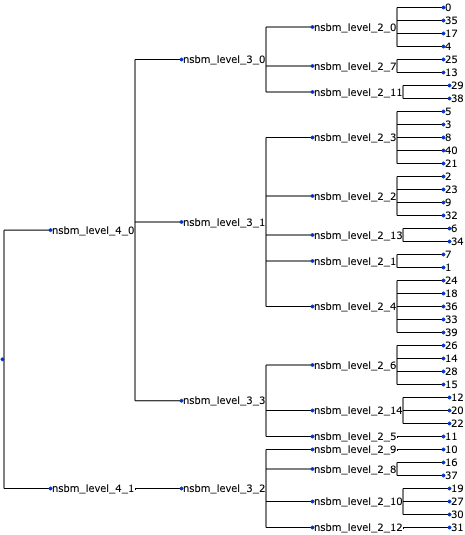
tascCODA 中的模型设置和执行与 scCODA 类似，参考和公式这两个自由参数也相同。此外，我们还可以通过以下参数来调整树的聚合和模型选择 phi 和 lambda_1 输入 pen_args 参数（参见 [Ostner et al., 2021] ，更多信息见此）。这里，我们使用一种无偏的设置 phi=0，以及一个比默认略宽松一些的模型选择 lambda_1=1.7。我们用第 18 号聚类作为参考，因为它与内分泌细胞那一组几乎完全相同。
tasccoda_model.prepare(
tasccoda_data,
modality_key="coda",
reference_cell_type="18",
formula="condition",
pen_args={"phi": 0, "lambda_1": 3.5},
tree_key="tree",
)
Zero counts encountered in data! Added a pseudocount of 0.5.
MuData object with n_obs × n_vars = 9852 × 15256
2 modalities
rna: 9842 x 15215
obs: 'batch', 'barcode', 'condition', 'cell_label', 'scCODA_sample_id', 'nsbm_level_0', 'nsbm_level_1', 'nsbm_level_2', 'nsbm_level_3', 'nsbm_level_4', 'nsbm_level_5'
uns: 'neighbors', 'umap', 'schist', 'nsbm_level_1_colors', 'nsbm_level_2_colors', 'cell_label_colors'
obsm: 'X_pca', 'X_umap', 'CM_nsbm_level_0', 'CM_nsbm_level_1', 'CM_nsbm_level_2', 'CM_nsbm_level_3', 'CM_nsbm_level_4', 'CM_nsbm_level_5'
layers: 'counts', 'logcounts'
obsp: 'distances', 'connectivities'
coda: 10 x 41
obs: 'condition', 'batch'
var: 'n_cells'
uns: 'tree', 'scCODA_params'
obsm: 'covariate_matrix', 'sample_counts'tasccoda_model.run_nuts(
tasccoda_data, modality_key="coda", rng_key=1234, num_samples=10000, num_warmup=1000
)
sample: 100%|██████████| 11000/11000 [04:50<00:00, 37.83it/s, 127 steps of size 3.18e-02. acc. prob=0.97]
tasccoda_model.summary(tasccoda_data, modality_key="coda")
同样，tascCODA 的接受概率恰好在期望值 0.85 附近，表明优化没有明显问题。
tascCODA 的结果首先应被解读为对树节点的效应。某个节点上的非零参数，意味着该节点下所有细胞类型的总计数发生了显著变化。我们可以很方便地为三种疾病状态各画一张树图来可视化这一点。蓝色圆圈表示增加，红色圆圈表示减少：
tasccoda_model.plot_draw_effects(
tasccoda_data,
modality_key="coda",
tree="tree",
covariate="condition[T.Salmonella]",
show_leaf_effects=False,
show_legend=False,
)
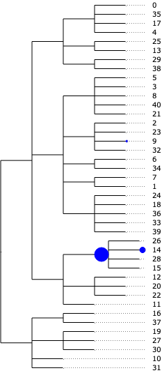
tasccoda_model.plot_draw_effects(
tasccoda_data,
modality_key="coda",
tree="tree",
covariate="condition[T.Hpoly.Day3]",
show_leaf_effects=False,
show_legend=False,
)
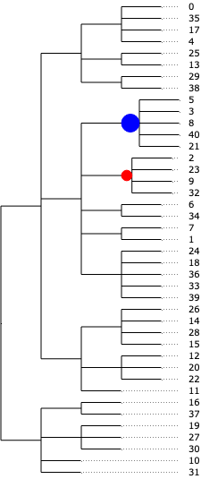
tasccoda_model.plot_draw_effects(
tasccoda_data,
modality_key="coda",
tree="tree",
covariate="condition[T.Hpoly.Day10]",
show_leaf_effects=False,
show_legend=False,
)
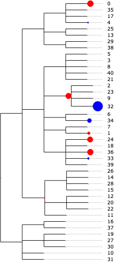
或者，对内部节点的效应也可以沿着树映射到细胞类型层面，从而像在 scCODA 中那样计算对数倍数变化。为了可视化各细胞类型的对数倍数变化，我们做与 scCODA 相同的图，灵感来自《High-resolution single-cell atlas reveals diversity and plasticity of tissue-resident neutrophils in non-small cell lung cancer》[Salcher et al., 2022].
tasccoda_model.plot_effects_barplot(
tasccoda_data, modality_key="coda", covariates="condition"
)
<seaborn.axisgrid.FacetGrid at 0x19ad2cd90>
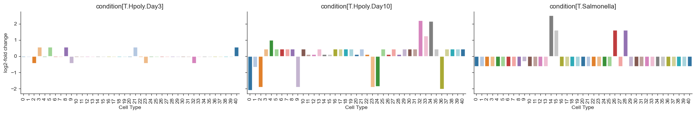
另一种有启发性的表示，是把每个条件下的效应大小画在 UMAP 嵌入上，并与细胞类型的分配作比较：
kwargs = {"ncols": 3, "wspace": 0.25, "vcenter": 0, "vmax": 1.5, "vmin": -1.5}
tasccoda_model.plot_effects_umap(
tasccoda_data,
effect_name=[
"effect_df_condition[T.Salmonella]",
"effect_df_condition[T.Hpoly.Day3]",
"effect_df_condition[T.Hpoly.Day10]",
],
cluster_key="nsbm_level_1",
**kwargs,
)
sc.pl.umap(
tasccoda_data["rna"], color=["cell_label", "nsbm_level_1"], ncols=2, wspace=0.5
)
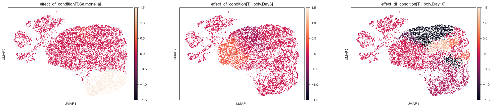
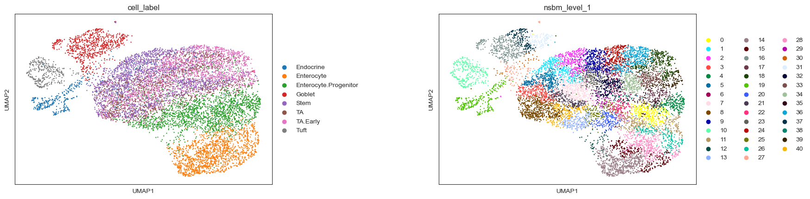
这些结果与 scCODA 的发现非常相似：
对于 Salmonella 感染，我们在那些大致对应肠上皮细胞的聚类中得到了聚合后的增加。对第 12 号聚类而言，这种增加更为明显，叶层上额外的正效应也体现了这一点
对于多形螺旋线虫（Heligmosomoides polygyrus）感染，3 天后我们没有得到可信的变化。10 天后，我们检测到含干细胞和过渡放大细胞的聚类减少，以及肠上皮细胞和肠上皮祖细胞较弱的减少，后者 scCODA 也同样检测到了。
19.6. 没有标签的聚类#
使用细胞类型定义这类精确标注的聚类，并不总是可行或实际的，尤其是当我们想研究细胞类型聚类之间的过渡状态（例如在发育过程中），或者当我们预期只有某种细胞类型的一个亚群会受到所关注条件影响时。在这些情况下，基于已知注释来确定组成变化可能并不合适。
存在一组方法，用于检测发生在“比细胞类型聚类更小的细胞亚群”中的组成变化，它们通常从一个 k 最近邻（KNN）图出发来定义——该图是根据用于聚类的同一低维空间中的相似性计算得到的。
DA-seq 为每个细胞计算一个分数，依据是该细胞邻域中来自两种生物学状态的细胞的相对占比，并使用一系列 k 值[Zhao et al., 2021]。这些分数随后作为逻辑斯蒂分类器（logistic classifier）的输入，用来预测每个细胞的生物学状态。
Milo 把细胞分配到 KNN 图上部分重叠的邻域中，然后用广义线性模型（GLM）对细胞计数建模，进行差异丰度（DA）检验 [Dann et al., 2022].
MELD 使用基于图的密度估计，计算在每种条件下观察到每个细胞的相对似然估计[Burkhardt et al., 2021].
这些方法各有独特的优点和缺点。由于 DA-seq 依赖逻辑斯蒂分类，它是为两种生物学条件之间的成对比较而设计的，无法用于检验与连续协变量（如年龄或时间点）相关的差异。DA-seq 和 Milo 利用同一条件不同重复样本之间丰度统计量的方差，来估计差异丰度的显著性，而 MELD 不使用这一信息。考虑重复之间的一致性虽然能减少由一个或少数几个样本驱动的假阳性，但所有基于 KNN 的方法都对信息损失很敏感——当由技术或实验变异来源所定义的混杂因素与所关注条件强相关时尤其如此。可以在构建 KNN 图之前使用批次整合方法、和/或在 DA 检验的模型中纳入这些混杂协变量，来减轻混杂因素的影响，我们会在下面的例子中进一步讨论。基于 KNN 的方法还有一个需要记住的局限：一个邻域中的细胞未必代表某个特定、独特的生物学亚群，因为一种细胞状态可能横跨多个邻域。减小 KNN 图的 k，或在某个特定关注谱系的细胞上构建图，有助于缓解这一问题，并确保所预测的效应对参数选择和所用数据子集都比较稳健[Dann et al., 2022].
一般来说，如果通过可视化能在大聚类中看到明显的巨大差异，或者我们关心的是细胞类型之间的不平衡，那么用能感知细胞类型的方法（如 scCODA）直接分析可能更合适。而当我们关心的是可能出现在细胞类型之间过渡状态、或某种细胞类型特定子集中的细胞丰度差异时，基于 KNN 的方法则更为有力。
现在我们将把 Milo 应用到 Haber 数据集，试图找出感染后细胞数过多或过少的邻域。
Milo 可作为 miloR 供 R 用户使用，也可在 pertpy 中供 scverse 生态中的 Python 用户使用。在下面的演示中，我们将使用 milo——由于它与 scverse 兼容，因此对我们的 AnnData 对象最易上手。请注意，目前版本的 milo 还需要一个可用的 edgeR 安装。
为了用 Milo 做 DA 分析，我们需要构建一个能代表细胞间生物学相似性的 KNN 图，就像对单细胞数据集做聚类或 UMAP 可视化时那样。这意味着：(A) 为所有样本构建一个共同的低维空间；(B) 尽量减小由技术因素（即批次效应）驱动的细胞间相似性。
我们先用标准的 scanpy 降维流程，定性地评估在这个数据集中是否能看到批次效应。
milo = pt.tl.Milo()
adata = pt.dt.haber_2017_regions()
mdata = milo.load(adata)
mdata
MuData object with n_obs × n_vars = 9842 × 15215
2 modalities
rna: 9842 x 15215
obs: 'batch', 'barcode', 'condition', 'cell_label'
milo: 0 x 0# use logcounts to calculate PCA and neighbors
adata.layers["counts"] = adata.X.copy()
adata.layers["logcounts"] = sc.pp.log1p(adata.layers["counts"]).copy()
adata.X = adata.layers["logcounts"].copy()
sc.pp.highly_variable_genes(
adata, n_top_genes=3000, subset=False
) # 3k genes as used by authors for clustering
sc.pp.pca(adata)
sc.pp.neighbors(adata, n_neighbors=10, n_pcs=30)
sc.tl.umap(adata)
OMP: Info #276: omp_set_nested routine deprecated, please use omp_set_max_active_levels instead.
sc.pl.umap(adata, color=["condition", "batch", "cell_label"], ncols=3, wspace=0.25)
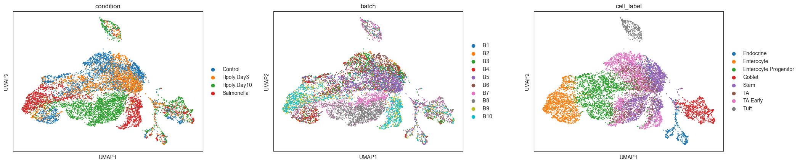
虽然细胞类型聚类大体上被捕捉到了，但我们能看到批次之间仍有残余的分离，同一处理的不同重复之间也是如此。如果我们在这个 KNN 图上定义邻域，可能会有很大一部分邻域只包含来自一个或少数几个批次的细胞。这可能引入假阴性——如果重复之间细胞数的方差太低（例如所有重复都是 0 个细胞）或太高（例如除一个含大量细胞的重复外其余都是零）；但也会带来假阳性，尤其是像本例这样、每个条件的重复数都很少时。
为了尽量减少这些误差，我们采用 scVI 方法来学习一个批次校正后的潜在空间，相关介绍见整合章节.
import scvi
adata_scvi = adata[:, adata.var["highly_variable"]].copy()
scvi.model.SCVI.setup_anndata(adata_scvi, layer="counts", batch_key="batch")
model_scvi = scvi.model.SCVI(adata_scvi)
max_epochs_scvi = int(np.min([round((20000 / adata.n_obs) * 400), 400]))
model_scvi.train(max_epochs=max_epochs_scvi)
adata.obsm["X_scVI"] = model_scvi.get_latent_representation()
sc.pp.neighbors(adata, use_rep="X_scVI")
sc.tl.umap(adata)
sc.pl.umap(adata, color=["condition", "batch", "cell_label"], ncols=3, wspace=0.25)
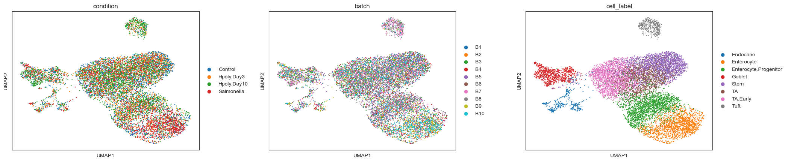
这里我们可以看到批次之间的混合好得多，细胞标签也形成了更均匀的聚类。
批次校正会不会把不同条件之间的生物学差异也一并去除？
这归根结底取决于良好的实验设计。在理想的设置中，同一条件的各重复会在不同批次中处理。这样既能更准确地估计技术差异，也可能把批次作为混杂因素纳入差异丰度分析的线性模型（见下文），以进一步减少假阳性。而像本例这样，当批次与所关注的生物学条件相混淆时，我们必须认识到：在尽量减少假阳性的同时，假阴性率可能也会升高。分析者可以根据数据集和差异丰度分析的目的，判断哪一类错误更有害。
19.6.1. 定义邻域#
Milo 是一个基于 KNN 的模型，其中细胞丰度是在细胞的邻域上量化的。在 Milo 中，一个邻域被定义为：在无向 KNN 图中，通过一条边与同一个细胞相连的那群细胞（索引细胞）。虽然原则上我们可以为图中的每个细胞都设一个邻域，但这样做效率低下，还会大大增加多重检验的负担。因此，Milo 从随机抽取的一部分细胞出发，采样出一组更精炼的细胞作为各邻域的索引细胞（index cell）。初始比例可以使用 prop 参数 milo.make_nhoods 函数。作为默认，我们建议使用 prop=0.1 （细胞的 10%）来指定，并可减小到 5% 或 2%，以提升在大数据集（>10 万细胞）上的可扩展性。
如果没有指定 neighbors_key 参数，Milo 就会使用来自 .obsp中的邻居。因此，要确保 sc.pp.neighbors 是在正确的表示上运行的——也就是说，如果需要批次校正，就应在整合后的潜在空间上运行。
milo.make_nhoods(mdata, prop=0.1)
现在，细胞到邻域的二元分配（binary assignment）存储在 adata.obsm['nhoods']中。在这里我们可以看到，正如预期，邻域的数目应小于或等于图中细胞数乘以 prop 参数。在本例中，邻域数小于或等于 984。
adata.obsm["nhoods"]
<9842x847 sparse matrix of type '<class 'numpy.float32'>'
with 22864 stored elements in Compressed Sparse Row format>
此时我们需要检查每个邻域的细胞中位数，以确保邻域包含足够的细胞以检测样本之间的差异。
nhood_size = adata.obsm["nhoods"].toarray().sum(0)
plt.hist(nhood_size, bins=20)
plt.xlabel("# cells in neighbourhood")
plt.ylabel("# neighbouthoods")
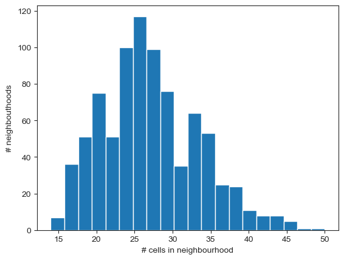
np.median(nhood_size)
26.0
我们期望最小的细胞数等于图构建时所用的 k 参数（本例中 k=10）。为了提高 DA 检验的统计功效，我们需要在大多数邻域中都有来自所有样本的足够数量的细胞。我们可以使用以下经验法则：要让每个邻域中来自各样本的细胞数中位数达到 3，邻域中的细胞数至少应为样本数的 3 倍。在本例中，我们有来自 10 个样本的数据。如果希望每个邻域中来自各样本的细胞平均有 3 个，则最小细胞数应为 30。
根据上图，有大量邻域的细胞数不足 30 个，这可能导致检验功效不足。为了解决这个问题，我们只需使用 n_neighbors=30 重新计算 KNN 图。为了把这个用于邻域级 DA 分析的 KNN 图与用于构建 UMAP 的图区分开来，我们会把它作为一个单独的图存储在 adata.obsp.
sc.pp.neighbors(adata, n_neighbors=30, use_rep="X_scVI", key_added="milo")
milo.make_nhoods(mdata, neighbors_key="milo", prop=0.1)
我们来检查一下邻域大小的分布是否发生了变化。
nhood_size = adata.obsm["nhoods"].toarray().sum(0)
plt.hist(nhood_size, bins=20)
plt.xlabel("# cells in neighbourhood")
plt.ylabel("# neighbouthoods")
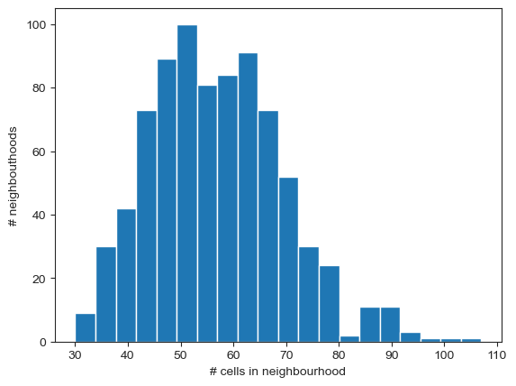
19.6.2. 统计邻域中的细胞#
下一步，Milo 会统计属于每个样本的细胞（这里由 batch 列加以标识；该列位于 adata.obs).
milo.count_nhoods(mdata, sample_col="batch")
MuData object with n_obs × n_vars = 9842 × 15215
2 modalities
rna: 9842 x 15215
obs: 'batch', 'barcode', 'condition', 'cell_label', 'nhood_ixs_random', 'nhood_ixs_refined', 'nhood_kth_distance'
var: 'highly_variable', 'means', 'dispersions', 'dispersions_norm'
uns: 'hvg', 'pca', 'neighbors', 'umap', 'condition_colors', 'batch_colors', 'cell_label_colors', 'nhood_neighbors_key', 'milo'
obsm: 'X_pca', 'X_umap', 'X_scVI', 'nhoods'
varm: 'PCs'
layers: 'counts', 'logcounts'
obsp: 'distances', 'connectivities', 'milo_distances', 'milo_connectivities'
milo_compositional: 10 x 808
var: 'index_cell', 'kth_distance'
uns: 'sample_col'这会存储一个邻域级的 AnnData 对象，其中 nhood_adata.X 存储每个邻域每个样本的细胞数量。
mdata["milo"]
AnnData object with n_obs × n_vars = 10 × 808
var: 'index_cell', 'kth_distance'
uns: 'sample_col'
我们可以验证：每个样本的平均细胞数乘以样本数，大致等于一个邻域中的细胞数。
mean_n_cells = mdata["milo"].X.toarray().mean(0)
plt.plot(nhood_size, mean_n_cells, ".")
plt.xlabel("# cells in nhood")
plt.ylabel("Mean # cells per sample in nhood")
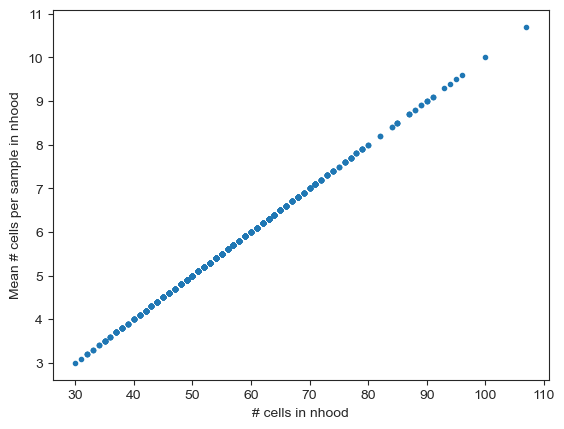
19.6.3. 在邻域上运行差异丰度检验#
Milo 使用 edgeR 的 QLF 检验，来检验在每个邻域中、来自所关注条件的细胞数之间是否存在统计上显著的差异。
在这里，我们感兴趣的是检测在哪些邻域中，细胞数会因感染而显著增加或减少。由于 condition 协变量中存储了许多不同类型的感染，因此我们需要在差异丰度检验中指定要对比哪些条件（按照 R 中的惯例，默认会用协变量的最后一个水平对其余水平作比较，本例中即 Salmonella vs 其余）。为了指定要比较的内容，我们使用 R 中用于 GLM 的语法.
我们首先来检验与沙门氏菌感染相关的差异。
milo.da_nhoods(
mdata, design="~condition", model_contrasts="conditionSalmonella-conditionControl"
)
milo_results_salmonella = mdata["milo"].obs.copy()
milo_results_salmonella
| condition | batch | |
|---|---|---|
| B1 | Control | B1 |
| B2 | Control | B2 |
| B3 | Control | B3 |
| B4 | Control | B4 |
| B5 | Hpoly.Day3 | B5 |
| B6 | Hpoly.Day3 | B6 |
| B7 | Hpoly.Day10 | B7 |
| B8 | Hpoly.Day10 | B8 |
| B9 | Salmonella | B9 |
| B10 | Salmonella | B10 |
对每个邻域，我们都会计算一组统计量。其中最重要、需要理解的是：
对数倍数变化（logFC）： 它表示细胞丰度差异的效应大小，对应于 GLM 中与所关注条件相关的系数。如果 logFC > 0，则该邻域富集了来自所关注条件的细胞；如果 logFC < 0，则该邻域中来自所关注条件的细胞被耗减。
未校正的 p 值（PValue）： 这是 QLF 检验在多重检验校正之前的 p 值。
SpatialFDR: 这是为限制错误发现率而针对多重检验进行校正后的 p 值。它是改用 Lun 等人提出的加权 Benjamini-Hochberg（BH）校正法计算得到的[Lun et al., 2017]，该校正考虑了这样一个事实：由于邻域之间部分重叠（即一个细胞可以属于多个邻域），不同邻域上的 DA 检验并不完全独立。在实际操作中，BH 校正以索引细胞到其第 k 个近邻的距离的倒数作为权重（该距离存储于
kth_distance），用作与其他邻域重叠程度的代理量。你可能会注意到，SpatialFDR 值总是小于或等于用常规 BH 校正计算出的 FDR 值。
在对结果进行任何探索和解释之前，我们可以用一套诊断图来可视化这些统计量，以对我们的统计检验做合理性检查：
def plot_milo_diagnostics(mdata):
alpha = 0.1 ## significance threshold
with matplotlib.rc_context({"figure.figsize": [12, 12]}):
## Check P-value histogram
plt.subplot(2, 2, 1)
plt.hist(mdata["milo"].var["PValue"], bins=20)
plt.xlabel("Uncorrected P-value")
## Visualize extent of multiple-testing correction
plt.subplot(2, 2, 2)
plt.scatter(
mdata["milo"].var["PValue"],
mdata["milo"].var["SpatialFDR"],
s=3,
)
plt.xlabel("Uncorrected P-value")
plt.ylabel("SpatialFDR")
## Visualize volcano plot
plt.subplot(2, 2, 3)
plt.scatter(
mdata["milo"].var["logFC"],
-np.log10(mdata["milo"].var["SpatialFDR"]),
s=3,
)
plt.axhline(
y=-np.log10(alpha),
color="red",
linewidth=1,
label=f"{int(alpha * 100)} % SpatialFDR",
)
plt.legend()
plt.xlabel("log-Fold Change")
plt.ylabel("- log10(SpatialFDR)")
plt.tight_layout()
## Visualize MA plot
df = mdata["milo"].var
emp_null = df[df["SpatialFDR"] >= alpha]["logFC"].mean()
df["Sig"] = df["SpatialFDR"] < alpha
plt.subplot(2, 2, 4)
sns.scatterplot(data=df, x="logCPM", y="logFC", hue="Sig")
plt.axhline(y=0, color="grey", linewidth=1)
plt.axhline(y=emp_null, color="purple", linewidth=1)
plt.legend(title=f"< {int(alpha * 100)} % SpatialFDR")
plt.xlabel("Mean log-counts")
plt.ylabel("log-Fold Change")
plt.show()
plot_milo_diagnostics(mdata)
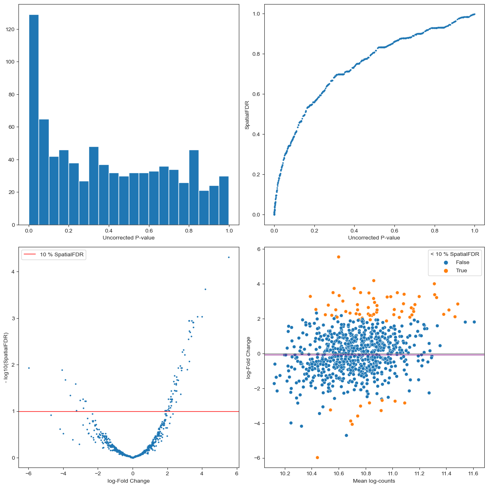
P 值直方图 显示多重检验校正前 P 值的分布。顾名思义，我们期望零假设下（> 显著性水平）的 p 值是均匀分布的，而接近 0 处的 p 值峰则代表显著结果。这能让你了解自己的检验有多保守，也有助于及早发现一些病态情形。例如，如果 P 值的分布看起来是双峰的、第二个峰接近 1，这可能表明你有大量邻域在某个条件的各重复之间没有方差（例如某个条件的所有重复都是 0 个细胞），这可能意味着存在残余批次效应，或者你需要增大邻域的尺寸；如果 p 值直方图是左偏的，这可能表明某种 混杂协变量 未被纳入模型中加以考虑。其他病理学案例和可能的解释见 这个博客帖.
对每个邻域，我们绘制未校正的 P 值对“控制了空间 FDR（Spatial FDR）的 p 值”。这里我们期望校正后的 p 值更大（即点位于对角线上方）。如果 FDR 校正特别严厉（即许多值接近 1），这可能表示一种病态情形。你可能在过多的邻域上做了检验（可以减小
propinmilo.make_nhoods）；也可能是邻域之间重叠过多（在构建 KNN 图时，你可能需要减小 k ）。火山图 告诉我们有多少邻域在经过多重检验校正(- log(SpatialFDR) > 1)后显示出显著的DA, 并显示有多少邻域富集或耗减了来自所关注条件的细胞。
MA 图 显示每个样本的平均细胞数与检验的对数倍数变化（log-Fold Change）之间的依赖关系。在均衡的情形下，我们期望点集中在 logFC = 0 附近；否则这种偏移可能表明不同条件的样本之间平均细胞数严重失衡。关于如何解读 MA 图的更多提示见 MarioniLab/miloR#208.
在做完合理性检查（sanity check）之后，我们可以根据索引细胞在 UMAP 嵌入上的位置，把每个邻域的 DA 结果可视化，从而定性地评估哪些细胞类型可能最受感染影响。
milo.build_nhood_graph(mdata)
with matplotlib.rc_context({"figure.figsize": [10, 10]}):
milo.plot_nhood_graph(mdata, alpha=0.1, min_size=5, plot_edges=False)
sc.pl.umap(mdata["rna"], color="cell_label", legend_loc="on data")
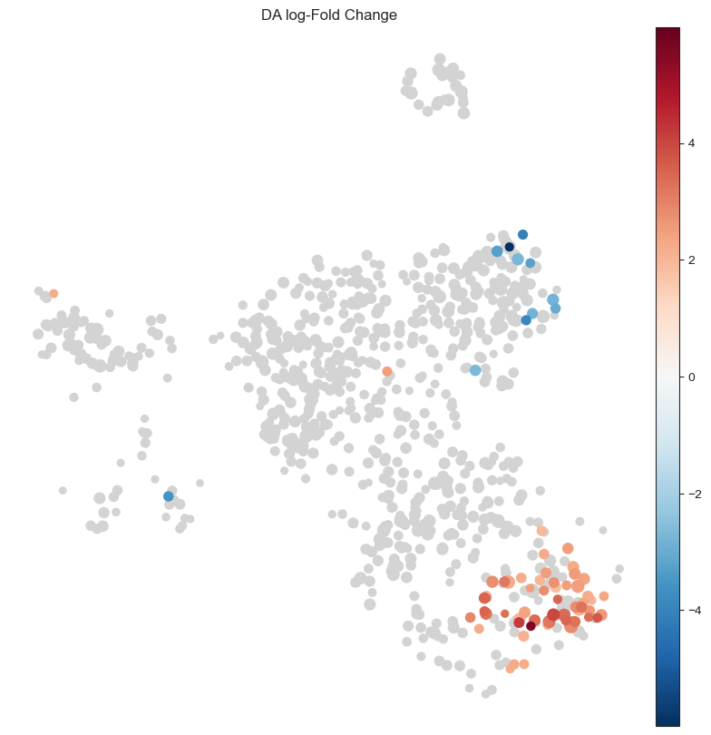
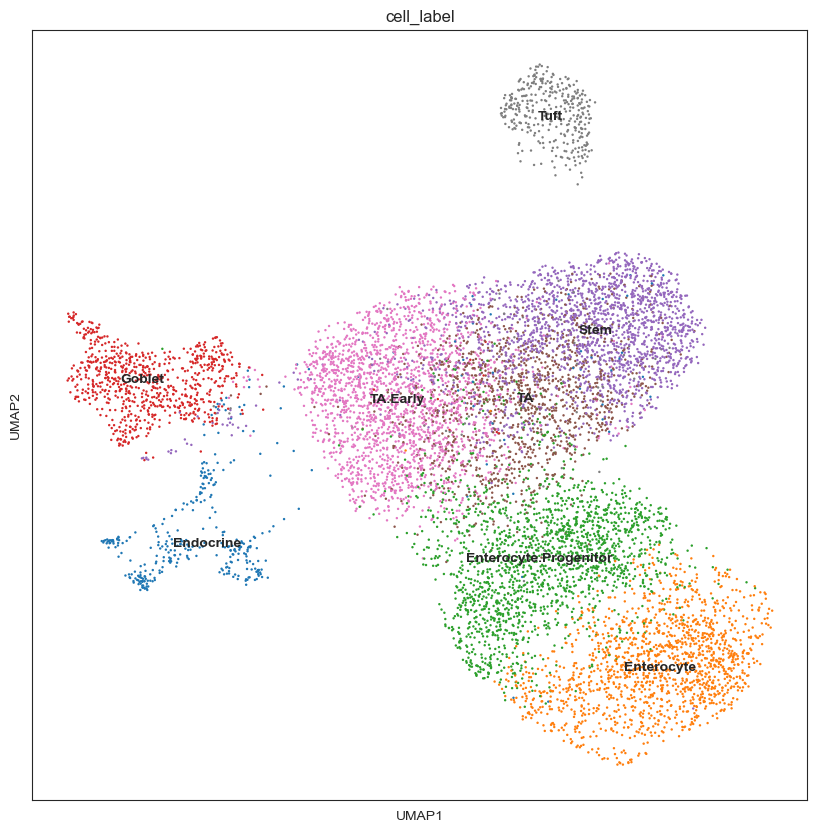
这显示出一组在 Salmonella 感染后富集的、对应于成熟肠上皮细胞的邻域，以及一部分干细胞邻域中的细胞耗减。为了解读结果，通常很有用的做法是：用邻域所重叠的细胞类型聚类来给邻域做注释。
milo.annotate_nhoods(mdata, anno_col="cell_label")
# Define as mixed if fraction of cells in nhood with same label is lower than 0.75
mdata["milo"].var.loc[
mdata["milo"].var["nhood_annotation_frac"] < 0.75, "nhood_annotation"
] = "Mixed"
milo.plot_da_beeswarm(mdata)
plt.show()
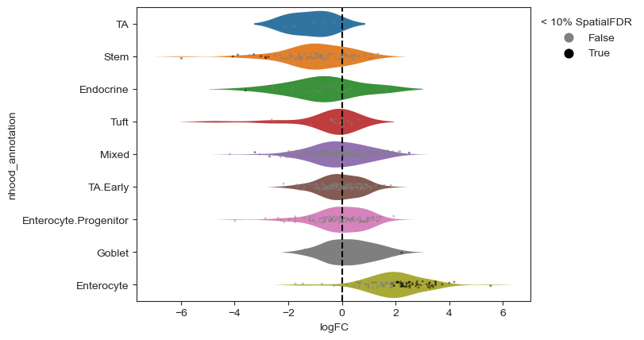
那么成分效应又如何呢？
把 Milo 的结果与 scCODA 的结果相比较，我们在这里发现：在 Salmonella 感染后，肠上皮细胞（Enterocyte）中出现了很强的富集，但一部分干细胞（Stem cell）中也出现了耗减，这与原作者报告的情况类似[Haber et al., 2017]。尽管我们没有真值（ground truth）来验证干细胞丰度的下降是否真实存在，但需要注意的是：Milo 中的 GLM 并没有显式地对邻域中细胞丰度的成分性质建模，因此理论上结果可能会受到成分偏倚的影响。在实践中，对大量邻域进行检验可以缓解这一问题，因为相反方向的效应会分散到数千个邻域中，而不是几十种细胞类型上。此外，Milo 所用的检验使用了 M 值截尾均值归一化方法（TMM 归一化 [Robinson and Oshlack, 2010]）来估计对样本间成分差异稳健的归一化因子。在这个具体例子中，残余的成分效应可能由以下原因解释：(A) 邻域数量相对较少（< 1000）；(B) 肠上皮细胞邻域中的效应量非常大；或 (C) 每个条件的重复数非常少。
值得注意的是，Milo 所用的 GLM 框架也允许对连续协变量检验细胞的富集/耗减。我们通过沿以下变量检验差异丰度来演示这一点： Heligmosomoides polygyrus 感染的时间进程。
## Turn into continuous variable
mdata["rna"].obs["Hpoly_timecourse"] = (
mdata["rna"]
.obs["condition"]
.cat.reorder_categories(["Salmonella", "Control", "Hpoly.Day3", "Hpoly.Day10"])
)
mdata["rna"].obs["Hpoly_timecourse"] = mdata["rna"].obs["Hpoly_timecourse"].cat.codes
## Here we exclude salmonella samples
test_samples = (
mdata["rna"]
.obs.batch[mdata["rna"].obs.condition != "Salmonella"]
.astype("str")
.unique()
)
milo.da_nhoods(mdata, design="~ Hpoly_timecourse", subset_samples=test_samples)
plot_milo_diagnostics(mdata)
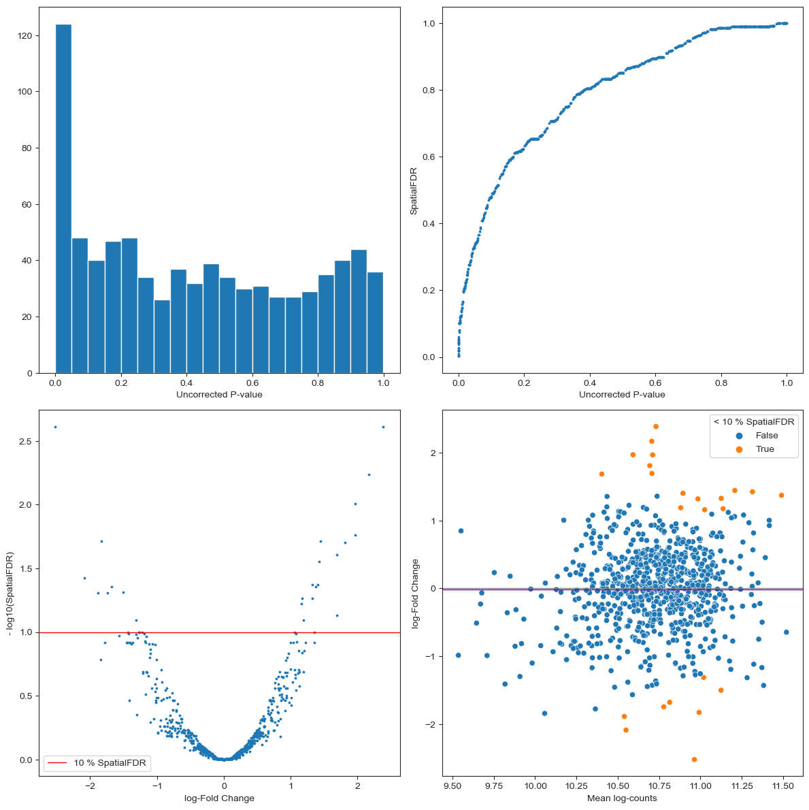
with matplotlib.rc_context({"figure.figsize": [10, 10]}):
milo.plot_nhood_graph(mdata, alpha=0.1, min_size=5, plot_edges=False)
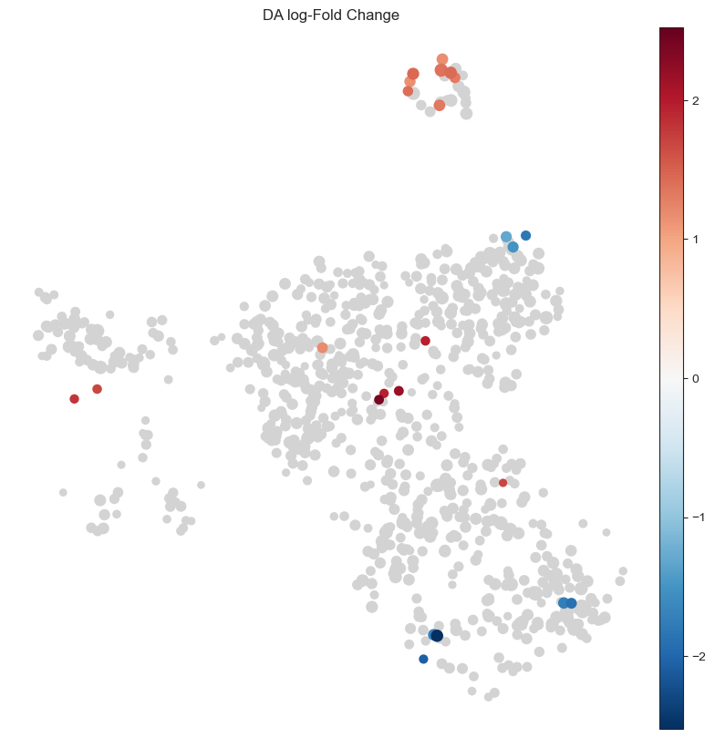
milo.plot_da_beeswarm(mdata)
plt.show()
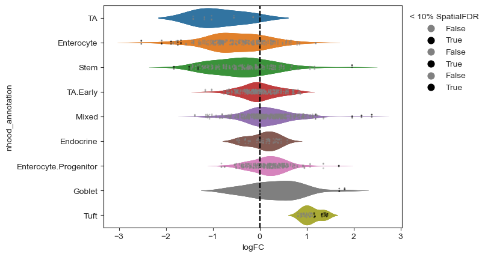
我们可以通过在“检测到显著富集或耗减的邻域”中、按条件绘制每个样本的细胞数，来验证该检验确实捕捉到了整个时间序列上细胞数的线性增长。
entero_ixs = mdata["milo"].var_names[
(mdata["milo"].var["SpatialFDR"] < 0.1)
& (mdata["milo"].var["logFC"] < 0)
& (mdata["milo"].var["nhood_annotation"] == "Enterocyte")
]
plt.title("Enterocyte")
milo.plot_nhood_counts_by_cond(
mdata, test_var="Hpoly_timecourse", subset_nhoods=entero_ixs
)
plt.show()
tuft_ixs = mdata["milo"].var_names[
(mdata["milo"].var["SpatialFDR"] < 0.1)
& (mdata["milo"].var["logFC"] > 0)
& (mdata["milo"].var["nhood_annotation"] == "Tuft")
]
plt.title("Tuft cells")
milo.plot_nhood_counts_by_cond(
mdata, test_var="Hpoly_timecourse", subset_nhoods=tuft_ixs
)
plt.show()
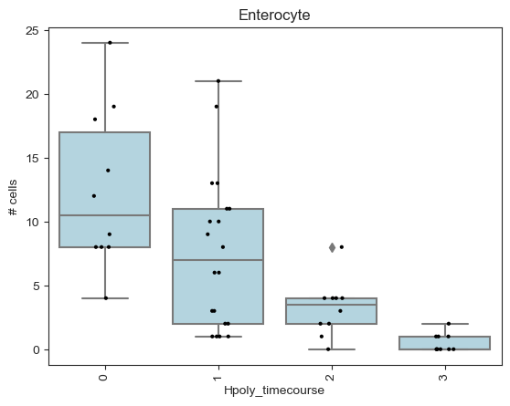
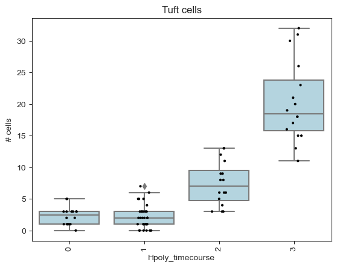
有趣的是，对邻域的 DA 检验发现：在簇状（Tuft）细胞和一部分杯状（goblet）细胞中，感染后出现了富集。我们可以通过检查邻域中细胞的平均基因表达谱，来刻画感染后富集的细胞类型亚群之间的差异。例如，如果取杯状细胞的邻域，可以看到感染后富集的邻域表现出更高的 Retnlb 表达，这是一个与抗寄生虫免疫有关的基因 [Haber et al., 2017].
## Compute average Retnlb expression per neighbourhood
# (you can add mean expression for all genes using milo.utils.add_nhood_expression)
mdata["rna"].obs["Retnlb_expression"] = (
mdata["rna"][:, "Retnlb"].layers["logcounts"].toarray().ravel()
)
milo.annotate_nhoods_continuous(mdata, "Retnlb_expression")
# milo.annotate_nhoods(mdata, "Retnlb_expression")
## Subset to Goblet cell neighbourhoods
nhood_df = mdata["milo"].var.copy()
nhood_df = nhood_df[nhood_df["nhood_annotation"] == "Goblet"]
sns.scatterplot(data=nhood_df, x="logFC", y="nhood_Retnlb_expression")
plt.show()
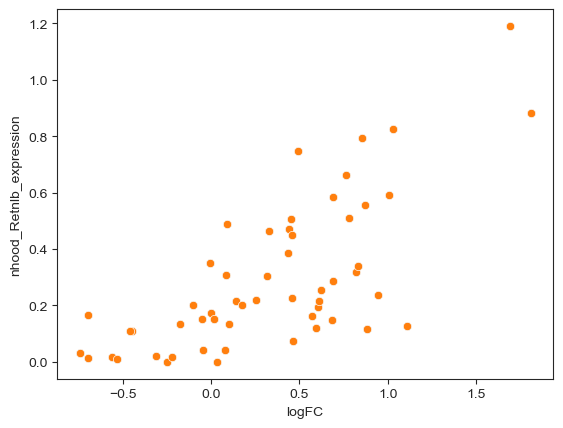
造成混淆的原因: 除了我们所关注的条件之外，还有若干混杂因素可能影响细胞的丰度和比例。例如，不同组的样本可能在同一批次中被处理或测序，或者某组样本可能包含用不同标记进行 FAC 分选、以富集某些感兴趣群体的细胞。只要这些因素与所关注的条件不是完全相关，我们就可以把这些协变量纳入差异丰度检验所用的模型，从而在估计与所关注条件相关的差异丰度的同时，尽量减少由混杂因素所解释的差异。在 Milo 中，我们可以用以下语法来表达这种检验设计：
~ confounder + condition.
## Make dummy confounder for the sake of this example
nhood_adata = mdata["milo"].copy()
conf_dict = dict(
zip(
nhood_adata.obs_names,
rng.choice(["group1", "group2"], nhood_adata.n_obs),
strict=False,
)
)
mdata["rna"].obs["dummy_confounder"] = [conf_dict[x] for x in mdata["rna"].obs["batch"]]
milo.da_nhoods(mdata, design="~ dummy_confounder+condition")
mdata["milo"].var
| index_cell | kth_distance | SpatialFDR | Sig | Nhood_size | nhood_annotation | nhood_annotation_frac | nhood_Retnlb_expression | logFC | logCPM | F | PValue | FDR | |
|---|---|---|---|---|---|---|---|---|---|---|---|---|---|
| 0 | B1_AAAGGCCTAAGGCG_Control_Stem | 1.304513 | 0.056105 | False | 53.0 | Stem | 0.830189 | 0.033807 | -3.696119 | 10.690300 | 9.083460 | 0.002595 | 0.066143 |
| 1 | B1_AACACGTGATGCTG_Control_TA.Early | 1.335187 | 0.938353 | False | 67.0 | Mixed | 0.477612 | 0.020691 | -0.248959 | 10.926409 | 0.078934 | 0.778762 | 0.941976 |
| 2 | B1_AACTTGCTGGTATC_Control_Enterocyte | 1.519376 | 0.693653 | False | 49.0 | Enterocyte | 1.000000 | 0.000000 | 0.951949 | 10.727155 | 1.416844 | 0.233993 | 0.720537 |
| 3 | B1_AAGAACGATGACTG_Control_Enterocyte | 2.143153 | 0.746709 | False | 39.0 | Enterocyte | 1.000000 | 0.000000 | 0.879631 | 10.467676 | 1.109896 | 0.292168 | 0.769131 |
| 4 | B1_AATTACGAAACAGA_Control_Enterocyte.Progenitor | 1.600587 | 0.436180 | False | 37.0 | Enterocyte.Progenitor | 0.945946 | 0.000000 | -2.440105 | 10.296494 | 3.202427 | 0.073604 | 0.478744 |
| ... | ... | ... | ... | ... | ... | ... | ... | ... | ... | ... | ... | ... | ... |
| 803 | B10_TTAGGTCTAGACTC_Salmonella_Goblet | 1.547428 | 0.400895 | False | 48.0 | Goblet | 1.000000 | 0.126426 | 1.931002 | 10.566431 | 3.591423 | 0.058150 | 0.443255 |
| 804 | B10_TTAGTCACCATGGT_Salmonella_TA.Early | 1.348982 | 0.880493 | False | 64.0 | TA.Early | 0.875000 | 0.010830 | -0.553709 | 10.876626 | 0.342947 | 0.558166 | 0.886244 |
| 805 | B10_TTATGGCTTAACGC_Salmonella_TA.Early | 1.357123 | 0.981884 | False | 51.0 | TA.Early | 0.862745 | 0.000000 | 0.071987 | 10.649724 | 0.007052 | 0.933080 | 0.982928 |
| 806 | B10_TTCATCGACCGTAA_Salmonella_TA.Early | 1.313244 | 0.908718 | False | 66.0 | TA.Early | 0.787879 | 0.021004 | -0.403998 | 10.825716 | 0.176318 | 0.674579 | 0.916060 |
| 807 | B10_TTGAACCTCATTTC_Salmonella_TA.Early | 1.333960 | 0.787177 | False | 55.0 | Mixed | 0.454545 | 0.012603 | 0.774925 | 10.712952 | 0.811296 | 0.367791 | 0.805382 |
808 rows × 13 columns
19.7. Quiz#
19.8. 参考文献#
J. Aitchison. The statistical analysis of compositional data. Journal of the Royal Statistical Society: Series B (Methodological), 44(2):139–160, 1982. URL: https://rss.onlinelibrary.wiley.com/doi/abs/10.1111/j.2517-6161.1982.tb01195.x, arXiv:https://rss.onlinelibrary.wiley.com/doi/pdf/10.1111/j.2517-6161.1982.tb01195.x, doi:https://doi.org/10.1111/j.2517-6161.1982.tb01195.x.
Barak Brill, Amnon Amir, and Ruth Heller. Testing for differential abundance in compositional counts data, with application to microbiome studies. ArXiv, April 2019. URL: http://arxiv.org/abs/1904.08937, arXiv:1904.08937.
Daniel B. Burkhardt, Jay S. Stanley, Alexander Tong, Ana Luisa Perdigoto, Scott A. Gigante, Kevan C. Herold, Guy Wolf, Antonio J. Giraldez, David van Dijk, and Smita Krishnaswamy. Quantifying the effect of experimental perturbations at single-cell resolution. Nature Biotechnology, 39(5):619–629, May 2021. URL: https://doi.org/10.1038/s41587-020-00803-5, doi:10.1038/s41587-020-00803-5.
M. Büttner, J. Ostner, C. L. Müller, F. J. Theis, and B. Schubert. Sccoda is a bayesian model for compositional single-cell data analysis. Nature Communications, 12(1):6876, Nov 2021. URL: https://doi.org/10.1038/s41467-021-27150-6, doi:10.1038/s41467-021-27150-6.
Yue Cao, Yingxin Lin, John T. Ormerod, Pengyi Yang, Jean Y.H. Yang, and Kitty K. Lo. Scdc: single cell differential composition analysis. BMC Bioinformatics, 20(19):721, Dec 2019. URL: https://doi.org/10.1186/s12859-019-3211-9, doi:10.1186/s12859-019-3211-9.
Emma Dann, Neil C. Henderson, Sarah A. Teichmann, Michael D. Morgan, and John C. Marioni. Differential abundance testing on single-cell data using k-nearest neighbor graphs. Nature Biotechnology, 40(2):245–253, Feb 2022. URL: https://doi.org/10.1038/s41587-021-01033-z, doi:10.1038/s41587-021-01033-z.
J J Egozcue, V Pawlowsky-Glahn, G Mateu-Figueras, and C Barceló-Vidal. Isometric logratio transformations for compositional data analysis. Math. Geol., 35(3):279–300, April 2003. URL: https://doi.org/10.1023/A:1023818214614, doi:10.1023/A:1023818214614.
Andrew D Fernandes, Jennifer Ns Reid, Jean M Macklaim, Thomas A McMurrough, David R Edgell, and Gregory B Gloor. Unifying the analysis of high-throughput sequencing datasets: characterizing RNA-seq, 16S rRNA gene sequencing and selective growth experiments by compositional data analysis. Microbiome, 2:15, May 2014. URL: http://dx.doi.org/10.1186/2049-2618-2-15, doi:10.1186/2049-2618-2-15.
Gregory B Gloor, Jean M Macklaim, Vera Pawlowsky-Glahn, and Juan J Egozcue. Microbiome datasets are compositional: and this is not optional. Front. Microbiol., 8:2224, November 2017. URL: http://dx.doi.org/10.3389/fmicb.2017.02224, doi:10.3389/fmicb.2017.02224.
Adam L. Haber, Moshe Biton, Noga Rogel, Rebecca H. Herbst, Karthik Shekhar, Christopher Smillie, Grace Burgin, Toni M. Delorey, Michael R. Howitt, Yarden Katz, Itay Tirosh, Semir Beyaz, Danielle Dionne, Mei Zhang, Raktima Raychowdhury, Wendy S. Garrett, Orit Rozenblatt-Rosen, Hai Ning Shi, Omer Yilmaz, Ramnik J. Xavier, and Aviv Regev. A single-cell survey of the small intestinal epithelium. Nature, 551(7680):333–339, Nov 2017. URL: https://doi.org/10.1038/nature24489, doi:10.1038/nature24489.
Huang Lin and Shyamal Das Peddada. Analysis of compositions of microbiomes with bias correction. Nat. Commun., 11(1):3514, July 2020. URL: http://dx.doi.org/10.1038/s41467-020-17041-7, doi:10.1038/s41467-020-17041-7.
Aaron T. L. Lun, Arianne C. Richard, and John C. Marioni. Testing for differential abundance in mass cytometry data. Nature Methods, 14(7):707–709, July 2017. doi:10.1038/nmeth.4295.
Leonardo Morelli, Valentina Giansanti, and Davide Cittaro. Nested stochastic block models applied to the analysis of single cell data. BMC Bioinformatics, 22(1):576, November 2021. URL: http://dx.doi.org/10.1186/s12859-021-04489-7, doi:10.1186/s12859-021-04489-7.
Johannes Ostner, Salomé Carcy, and Christian L. Müller. Tasccoda: bayesian tree-aggregated analysis of compositional amplicon and single-cell data. Frontiers in Genetics, 2021. URL: https://www.frontiersin.org/article/10.3389/fgene.2021.766405, doi:10.3389/fgene.2021.766405.
Mark D. Robinson and Alicia Oshlack. A scaling normalization method for differential expression analysis of RNA-seq data. Genome Biology, 11(3):R25, March 2010. doi:10.1186/gb-2010-11-3-r25.
Stefan Salcher, Gregor Sturm, Lena Horvath, Gerold Untergasser, Georgios Fotakis, Elisa Panizzolo, Agnieszka Martowicz, Georg Pall, Gabriele Gamerith, Martina Sykora, Florian Augustin, Katja Schmitz, Francesca Finotello, Dietmar Rieder, Sieghart Sopper, Dominik Wolf, Andreas Pircher, and Zlatko Trajanoski. High-resolution single-cell atlas reveals diversity and plasticity of tissue-resident neutrophils in non-small cell lung cancer. bioRxiv, 2022. URL: https://www.biorxiv.org/content/early/2022/05/10/2022.05.09.491204, arXiv:https://www.biorxiv.org/content/early/2022/05/10/2022.05.09.491204.full.pdf, doi:10.1101/2022.05.09.491204.
Jun Zhao, Ariel Jaffe, Henry Li, Ofir Lindenbaum, Esen Sefik, Ruaidhrí Jackson, Xiuyuan Cheng, Richard A. Flavell, and Yuval Kluger. Detection of differentially abundant cell subpopulations in scrna-seq data. Proceedings of the National Academy of Sciences, 118(22):e2100293118, 2021. URL: https://www.pnas.org/doi/abs/10.1073/pnas.2100293118, arXiv:https://www.pnas.org/doi/pdf/10.1073/pnas.2100293118, doi:10.1073/pnas.2100293118.
19.9. 贡献者#
我们衷心感谢以下人员的贡献：